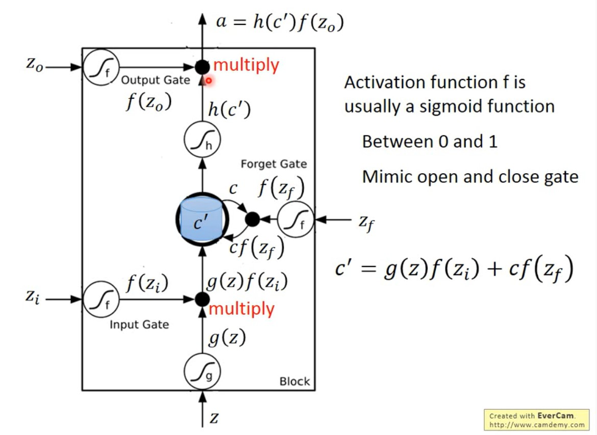
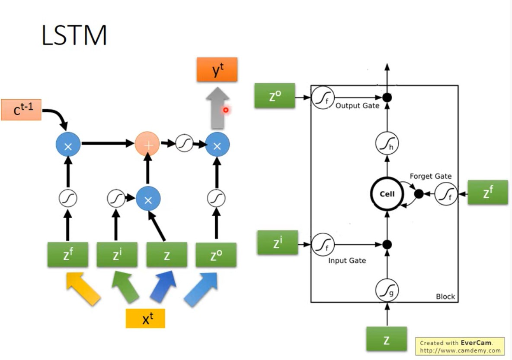
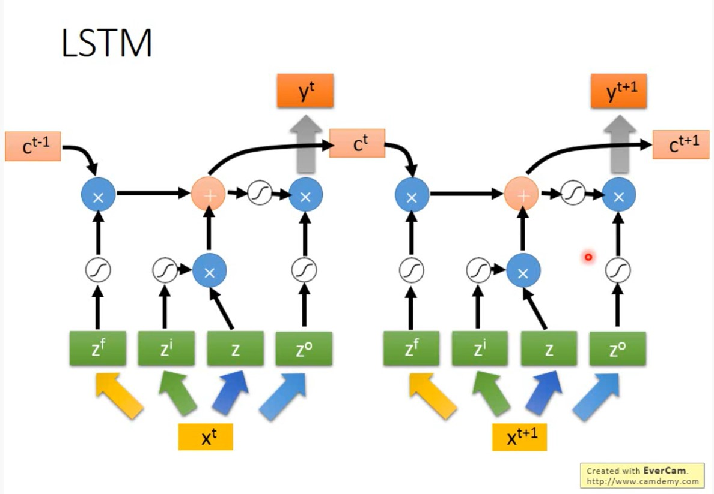
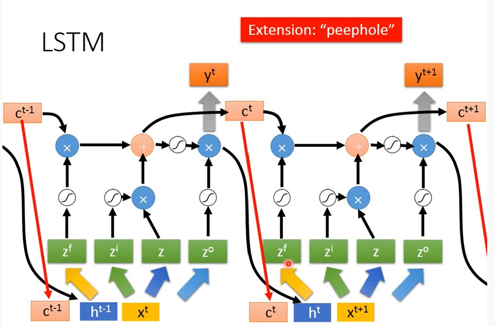

文章
139
标签
10
分类
9
南极Python
LSTM
发表于
2020-08-16
|
更新于
2020-08-16
|
深度学习笔记
|
字数总计:
33
|
阅读时长:
1分钟
|
阅读量:
可以把
lstm
的
memory
看做一个
neural
LSTM的解释图：

一个neural的工作过程

有点RNN的味道了

真正的LSTM

DL
上一篇
那些年
下一篇
RNN在TF中的实现
相关推荐
2021-07-28
FFB6D
2021-04-05
1小时快速入门PyTorch
2021-04-09
FaceFromX
2021-07-30
G2L-Net
2020-10-12
Keras中关于模型的trainable状态的问题
2021-08-01
MaskedFusion
雨落诗山山亦奇
昨夜星辰昨夜风
文章
139
标签
10
分类
9
公告
机器爱学习
最新文章
交叉验证时划分数据的方式
2022-01-15
Kaggle竞赛:宠物吸引力预测
2022-01-15
目标检测:Two-stage
2021-12-28
ToothSeg项目总结
2021-12-03
DeepLab系列解读
2021-12-03